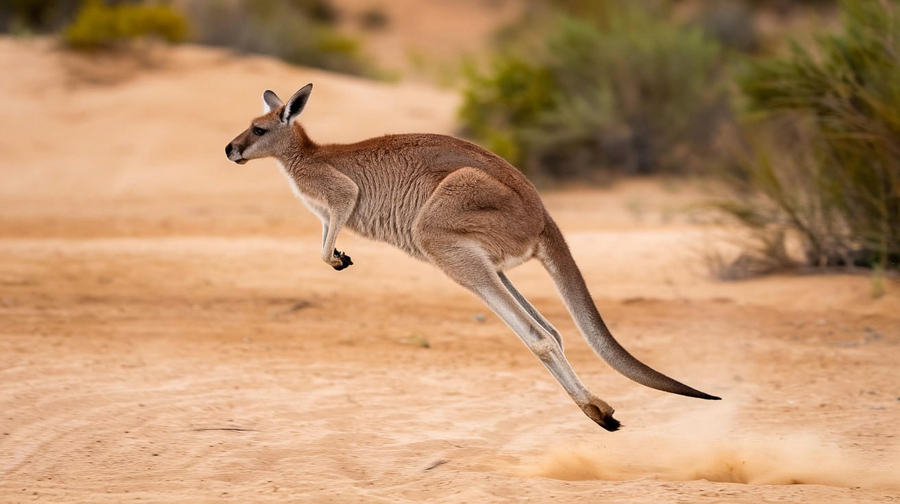

<-Menu principal
Canguro
CANGURO ROJO
(Osphranter rufus)

El canguro vive en Australia, en llanuras, bosques abiertos y zonas semiáridas. Es un animal que se desplaza saltando gracias a sus poderosas patas traseras. Vive en grupos llamados “tropas” y se alimenta de plantas. Las crías nacen muy pequeñas y se desarrollan dentro de la bolsa de la madre, donde permanecen protegidas.
Caracteristicas:
- Existe una diferencia de color entre sexos: los machos suelen tener un pelaje rojizo anaranjado, mientras que las hembras tienden a ser de un color gris azulado. Ambos tienen el vientre blanquecino.
- Poseen patas traseras muy potentes diseñadas para saltar. Pueden alcanzar velocidades de hasta 64 km/h y dar saltos de hasta 8 metros de largo.
- No sudan. Para refrescarse, lamen sus patas delanteras y frotan su pecho, enfriando la sangre que circula por la piel.
- los canguros rojos son los marsupiales vivos más grandes del planeta. Tal es así, que los machos pueden llegar a medir hasta 1.5 metros de longitud y pesar hasta 92 kilogramos (kg), duplicando a las hembras, que miden hasta 1 metro y pueden pesar aproximadamente 39 kg.
- Los canguros rojos son los marsupiales vivos más grandes del planeta. Tal es así, que los machos pueden llegar a medir hasta 1.5 metros de longitud y pesar hasta 92 kilogramos (kg), duplicando a las hembras, que miden hasta 1 metro y pueden pesar aproximadamente 39 kg.